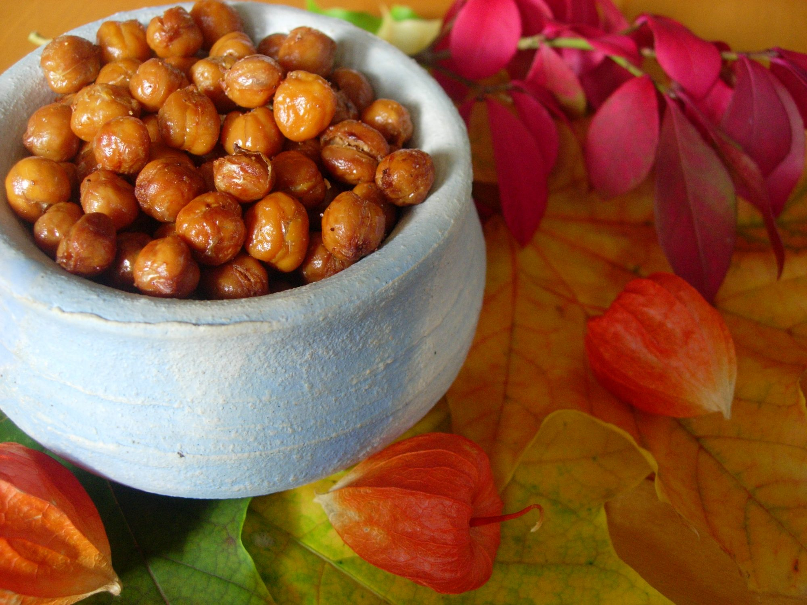

Roasted Chickpeas

Really?
Yes, really. Roasted Chickpeas are a delicious high-fiber snack. They're
oven-roasted and seasoned to taste with cayenne and garlic salt.
Ingredients
- 1 (15 ounce) can chickpeas (garbanzo beans), drained
- 2 tablespoons olive oil
- 1 pinch garlic salt, or to taste
- 1 pinch cayenne pepper, or to taste
- 1 pinch salt, or to taste
Steps
- Preheat the oven to 450 degrees
- Blot chickpeas with a paper towel to dry them
- Toss chickpeas and olive oil in bowl. Season to taste with
garlic salt, cayenne, and salt and toss again.
- Spread chickpeas on a rimmed baking sheet.
- Roast in the preheated oven until browned and crunchy, 30 to
40 minutes; watch carefully to avoid burning them.